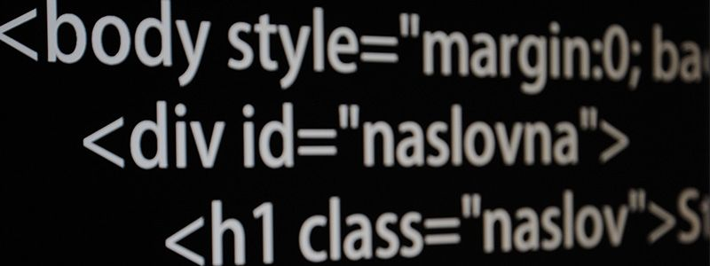

Predavanja HTML/CSS Web dizajn.
Napisan je u formi HTML elemenata koji se otvaraju i zatvaraju tagovima. HTML tagovi su
uglavnom upareni kao što je slučaj na primer sa H tagovima, međutim ima i tagova koji se ne
zatvaraju kao što je sličaj sa IMG tagovima. Prvi neupareni HTML tag je start koji se završava sa
end tagom. HTML elementi su gradivni blokovi svakog web sajta.

Web browser-i čitaju HTML dajući korisniku vizuelni prikaz opisane stranice, ali ne i prikaz
HTML tagova i korišćenih skripti. Ipak, napredovanjem web pretraživača moguće je pogledati kod na
svakoj stranici na internetu ukoliko želite da vidite šta se krije iza interfejsa koji je iscrtan na
vašem ekranu. Pored opisnog jezika HTML koristi se i CSS koji služi za opis pomenutih elemenata, i
definisanje njihovog izgleda (layout-a).
Počeci nastanka HTML jezika datiraju još u ranim osamdesetim. Fizičar Tim Berners Li (Tim
Berners-Lee) zaposlen u CERN-u predložio je i dizajnirao ENQUIRE, sistem koji su istraživači u
CERN-u koristili za razmenu dokumenata. Tim Berners je kasnije 1989 godine došao na ideju korišćenja
definisanog hipertekst sistema koji će se koristiti na internetu. Prva forma HTML-a se pojavila
davne 1991 godine. Sadržala je 18 elemenata i bila je dosta ograničena što se sadržaja tiče. Moramo
da pomenemo da je prethodnik HTML-a bio SGML (Standard Generalized Markup Language) i da je HTML
tada bio neka vrsta uprošćenog SGML jezika. Razvojem interneta, razvijali su se web pretraživači kao
i HTML koji je vremenom pored označavanja tekstualnog sadržaja, omogućavao označavanje
multimedijalnog sadržaja i uključivanje skriptnih kodova.